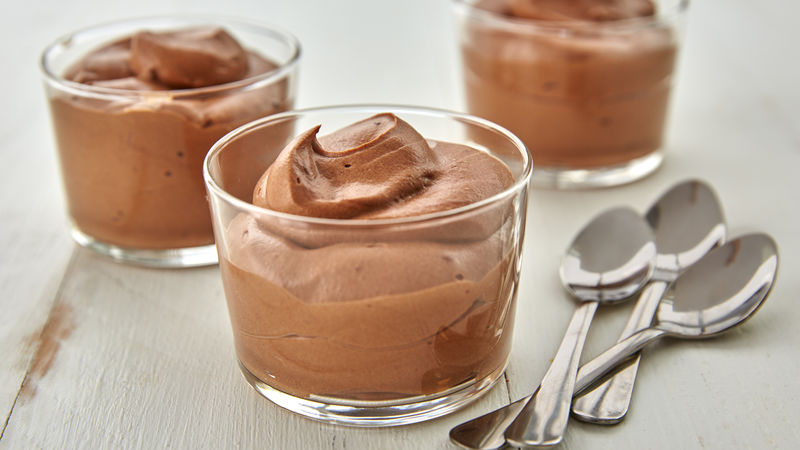

Toggle navigation
Home
Recipes
About
Contact

Ingredients
1.5dl Cream
100G Chocolate
2 Egg whites
20G Sugar
Chocolate mousse
for 2 persons
Step by step
Put a pot with water on the stove and bring it to the boil
Break the chocolate into pieces and put it in a bowl
Put the bowl ontop of the pot with water (do not let the water touch the bowl)
Beat the eggwhite and the sugar stiff with a whisk, It's ready when you can hold it upside down with out it falling out
Use a spatula to gently mix the choclate and the eggwhite, if you do it too hard the mousse will not get thick
Let it rest in the fridge for 1 to 2 hours